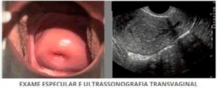
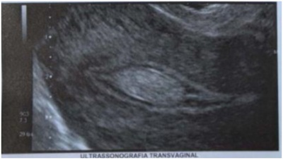
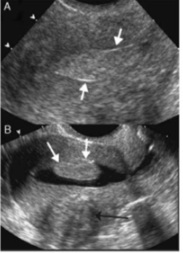
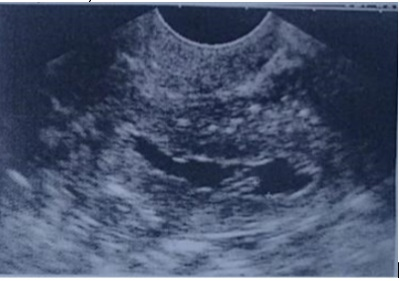

Questão 1 · Etiologia · Exames complementares · Classif icação FIGO · 4000178616Mulher de 23 anos de idade procurou o ambulatório de ginecologia, com queixa de aumento da intensidade e duração do uxo menstrual há 8 meses. Nulípara, tem como antecedentes três abortos espontâneos, nos quais não precisou realizar curetagem uterina. No exame físico, não apresentou qualquer alteração. Apresentou os seguintes exames complementares recentes: - Colpocitologia oncológica: alterações celulares benignas reativas ou reparativas. - Ultrassonogra a: volume uterino de 88 cm³. Eco endometrial heterogêneo de 36 mm (normalidade considerada até 15 mm) com lesão hiperecoica de contornos regulares na cavidade uterina. Anexos sem alterações ultrassonográficas. Considerando a história clínica e os exames físico e complementar da paciente, assinale a opção que apresenta a hipótese diagnóstica e a conduta adequada, respectivamente.
A Patologia cervical; colposcopia.
B Gestação ectópica; laparotomia exploratória.
C Miomatose uterina; laparoscopia diagnóstica.
D Pólipo endometrial; histeroscopia diagnóstica.
Questão 2 · Tratamento cirurgico conservador · Tratamento · 4000169284Paciente de 32 anos procura ambulatório especializado referindo di culdade para engravidar. Ao exame ginecológico nada foi constatado de anormal. Foi solicitado um ultrassom pélvico e transvaginal que revelou conteúdo sólido de 1,5 cm na cavidade uterina, sugestivo de pólipo ou mioma submucoso. A próxima conduta é:
A Realizar histerectomia devido ao alto risco para câncer de endométrio.
B Encaminhar paciente para serviço de Vídeo Histeroscopia para exérese da lesão.
C Introduzir tratamento com progesterona e indução da ovulação com citrato de clomifeno.
D Introduzir tratamento com anticoncepcional hormonal oral e repetir o ultrassom em 3 meses.
Questão 3 · Pólipo endometrial · 4000164422Mulher de 50 anos de idade, refere sangramento vaginal intermitente há 2 meses. A data da última menstruação foi há 2 anos. Nega terapia hormonal e comorbidades. Realizou ultrassonogra a endovaginal que mostrou imagem hiperecogênica de 7 mm com vascularização única e espessura endometrial de 3 mm. A conduta mais adequada, dentre as abaixo, é
A curetagem uterina para biópsia endometrial.
B histeroscopia cirúrgica para retirada de pólipo endometrial.
C histerectomia subtotal.
D histerectomia total abdominal e salpingooforectomia bilateral.
Questão 4 · Exames complementares · 4000153177Mulher, 51 anos, de menopausa há 3 anos, com queixa de sangramento uterino recorrente, em pequena quantidade, há 3 meses. Na maioria das vezes, os episódios de sangramento iniciam durante ou após as relações sexuais. A paciente é diabética e faz uso de insulina. Traz dois resultados normais de exames citopatológicos do colo uterino realizados nos últimos 2 anos, sendo o último há 9 meses. Exame físico: estado geral bom, hemodinamicamente estável, normocorada. Ao exame especular, visualiza-se lesão de aspecto polipoide de aproximadamente 2 cm se exteriorizando pelo orifício externo do colo uterino, não sendo possível visualizar a lesão em toda sua extensão. A conduta indicada é
A solicitar histeroscopia diagnóstica.
B realizar exérese imediata da lesão com pinça.
C realizar eletrocauterização da lesão.
D iniciar tratamento com solução de ácido tricloroacético.
Questão 5 · Tratamento · 4000146347M.N.B., 59 anos, menopausada há 5 anos, sem uso de terapia hormonal, vem ao ginecologista por apresentar sangramento uterino. Apresenta IMC 28 kg/m² , sem comorbidades, exame ginecológico sem alterações. A ultrassonogra a transvaginal evidenciou lesão hiperecogênica medindo 15 x 9 mm, contornos regulares, dentro da cavidade uterina e um halo hiperecoico ao redor, com vaso central ao Doppler. Assinale a alternativa que apresenta a conduta correta nesse caso.
A Teste da progesterona.
B Repetir ultrassonografia transvaginal com Doppler em 3 meses.
C Histeroscopia cirúrgica para exérese do pólipo.
D Histeroscopia diagnóstica com biópsia do pólipo.
E Dilatação do colo e curetagem uterina.
Questão 6 · Tratamento · 4000145999Mulher, 62 anos de idade, menopausa há 8 anos, apresentou sangramento após a menopausa. Submetida a histeroscopia, que evidenciou pólipo endometrial, sem outros achados. Qual é a melhor indicação para a paciente?
A Polipectomia histeroscópica
B Histerectomia total via abdominal
C Histerectomia total videolaparoscópica
D Curetagem uterina
Questão 7 · Pólipos uterinos · 4000145163Mulher 40 anos, refere aumento do uxo, duração e frequência do período menstrual há cerca de um ano. A ultrassonogra a revela útero de 9 cm, contornos regulares, eco endometrial de 15mm e presença de lesão de 2, 1 cm por 1,3 cm na cavidade uterina. Assinale a alternativa com o diagnóstico mais provável.
A Fibroadenoma uterino
B Pólipo endometrial
C Miomatose intramural
D Papiloma uterino
Questão 8 · Sangramento uterino anormal · Pólipos uterinos · 4000144278Hiperplasia Endometrial Câncer de endométrio e outros tumores do corpo do útero Mulher de 58 anos, menopausa há 5 anos. Há 3 meses com queixa de sangramento vaginal de discreta intensidade em episódios irregulares que duram um a dois dias. O exame especular e a ultrassonogra a estão representados nas guras. Qual a melhor conduta?

A Histerectomia total.
B Biópsia ambulatorial.
C Citologia cervical.
D Terapêutica progestagênica.
Questão 9 · Pólipos uterinos · 4000143740Mulher de 68 anos apresentou episódio isolado de discreto sangramento há 1 mês. AP: G2P1A1C0, obesidade, hipertensão e diabetes de difícil controle. AF: mãe falecida por neoplasia de cólon. Ultrassonogra a transvaginal: espessamento endometrial focal de 8 mm com pedículo único ao estudo Doppler. A conduta mais adequada é:
A expectante.
B curetagem uterina de prova.
C biópsia excisional dirigida.
D biópsia às cegas.
Questão 10 · Pólipos uterinos · 4000184876Mulher, 69 anos de idade, G3P3, menopausa 52 anos, apresentou episódio único de sangramento vaginal que cessou espontaneamente. O achado da histeroscopia diagnóstica está representado na imagem. Nesse caso, para adequado cuidado da paciente, a conduta é indicar:

A Histeroscopia total vaginal.
B Dilatação e curetagem uterina.
C Histerectomia laparoscópica.
D Remoção histeroscópica da lesão.
Questão 11 · Exames complementares · Tratamento · Quadro clínico · 4000127479Marcelina, 58 anos, menopausada há 7 anos, sem uso de terapia hormonal, procurou o ginecologista por apresentar sangramento vaginal. Ao exame: IMC 31 kg/m², hipertensa em uso de losartana e PA: 120 x 80 mmHg e diabetes melito tipo 2, com uso de metformina. Apresentou uma ultrassonogra a transvaginal realizada há 20 dias, que evidenciou lesão hiperecogênica medindo 15 x 12 mm, com contornos regulares, dentro da cavidade uterina e um halo hiperecoico ao redor, no Doppler, presença de vaso central e ovários não visualizados. Sobre o caso clínico apresentado, assinale certo ou errado para a afirmação a seguir. O risco de malignidade dos pólipos endometriais aumenta com a existência de fatores, como idade, uso de agonistas de estrogênio e tamanho do pólipo.
A Certo.
B Errado.
Questão 12 · Exames complementares · 4000127478Marcelina, 58 anos, menopausada há 7 anos, sem uso de terapia hormonal, procurou o ginecologista por apresentar sangramento vaginal. Ao exame: IMC 31 kg/m², hipertensa em uso de losartana e PA: 120 x 80 mmHg e diabetes melito tipo 2, com uso de metformina. Apresentou uma ultrassonogra a transvaginal realizada há 20 dias, que evidenciou lesão hiperecogênica medindo 15 x 12 mm, com contornos regulares, dentro da cavidade uterina e um halo hiperecoico ao redor, no Doppler, presença de vaso central e ovários não visualizados. Sobre o caso clínico apresentado, assinale certo ou errado para a afirmação a seguir. Em pacientes assintomáticas, a detecção de pólipos se dá por meio da histerossonogra a com associação do power Doppler ou Doppler convencional, que diferencia hiperplasia ou malignidade.
A Certo.
B Errado.
Questão 13 · Tratamento · 4000127477Marcelina, 58 anos, menopausada há 7 anos, sem uso de terapia hormonal, procurou o ginecologista por apresentar sangramento vaginal. Ao exame: IMC 31 kg/m², hipertensa em uso de losartana e PA: 120 x 80 mmHg e diabetes melito tipo 2, com uso de metformina. Apresentou uma ultrassonogra a transvaginal realizada há 20 dias, que evidenciou lesão hiperecogênica medindo 15 x 12 mm, com contornos regulares, dentro da cavidade uterina e um halo hiperecoico ao redor, no Doppler, presença de vaso central e ovários não visualizados. Sobre o caso clínico apresentado, assinale certo ou errado para a afirmação a seguir. A polipectomia histeroscópica tem baixo custo, boa segurança e nas pacientes inférteis deve ser realizada.
A Certo.
B Errado.
Questão 14 · Tratamento · Quadro clínico · 4000127476Marcelina, 58 anos, menopausada há 7 anos, sem uso de terapia hormonal, procurou o ginecologista por apresentar sangramento vaginal. Ao exame: IMC 31 kg/m², hipertensa em uso de losartana e PA: 120 x 80 mmHg e diabetes melito tipo 2, com uso de metformina. Apresentou uma ultrassonogra a transvaginal realizada há 20 dias, que evidenciou lesão hiperecogênica medindo 15 x 12 mm, com contornos regulares, dentro da cavidade uterina e um halo hiperecoico ao redor, no Doppler, presença de vaso central e ovários não visualizados. Sobre o caso clínico apresentado, assinale certo ou errado para a afirmação a seguir. A presença de imagem compatível com pólipo endometrial em mulher após a menopausa indica que ele deve ser removido para afastar o risco de lesão maligna ou pré-maligna.
A Certo.
B Errado.
Questão 15 · Exames complementares · 4000127475Marcelina, 58 anos, menopausada há 7 anos, sem uso de terapia hormonal, procurou o ginecologista por apresentar sangramento vaginal. Ao exame: IMC 31 kg/m², hipertensa em uso de losartana e PA: 120 x 80 mmHg e diabetes melito tipo 2, com uso de metformina. Apresentou uma ultrassonogra a transvaginal realizada há 20 dias, que evidenciou lesão hiperecogênica medindo 15 x 12 mm, com contornos regulares, dentro da cavidade uterina e um halo hiperecoico ao redor, no Doppler, presença de vaso central e ovários não visualizados. Sobre o caso clínico apresentado, assinale certo ou errado para a afirmação a seguir. A utilização de dilatação e curetagem uterina, bem como uso de Pipelle, são métodos muito utilizados e considerados atuais na prática ginecológica.
A Certo.
B Errado.
Questão 16 · Pólipo endometrial · Exames complementares · 4000124374O momento ideal de escolha para realização do ultrassom endovaginal para avaliação endometrial depende muito da fase do ciclo menstrual que a paciente se encontra. Assim, qual a melhor fase do ciclo menstrual para a realização da ultrassonografia, com intuito de realizar o diagnóstico de pólipo endometrial?
A Fase folicular ou proliferativa.
B Fase secretora ou Lútea.
C Fase periovulatória.
D Período Menstrual.
E Qualquer fase tem o mesmo resultado.
Questão 17 · Pólipo endometrial · 4000117692Paciente de 45 anos com ciclos menstruais regulares, mas apresentando uxo menstrual em quantidade aumentada há 6 meses, associado a dor tipo cólica nos períodos menstruais. A ultrassonografia transvaginal evidencia no interior da cavidade uterina uma imagem ecogênica de 10mm com aspecto nodular. De acordo com o caso clínico apresentado, a melhor conduta seria:
A Realizar curetagem uterina para tentar obter amostra para estudo histopatológico.
B Realizar um novo USG em 3 meses para seguimento do nódulo.
C Realizar histeroscopia diagnóstica para confirmar a existência de provável pólipo endometrial.
D Somente orientar a paciente a observar os ciclos menstruais utilizando anti-inflamatórios.
Questão 18 · Malignidade · Leiomiomatose uterina · Pólipos uterinos · 4000041109São causas de espessamento endometrial na ultrassonografia transvaginal, EXCETO:
A Pólipo
B Hiperplasia
C Neoplasia
D Adenomiose
Questão 19 · Pólipo endometrial · Exames complementares · 4000038527Para o diagnóstico do pólipo endometrial, o método padrão-ouro é
A Histerossalpingografia.
B Ultrassonografia transvaginal com doppler com visualização do nódulo endometrial com vaso único nutridor.
C Videohisteroscopia.
D Colposcopia.
E Curetagem semiótica.
Questão 20 · Tratamento · 4000028863Paciente de 37 anos e prole constituída apresenta hipermenorreia de longa duração. O exame de ultrassonogra a transvaginal mostra imagem sugestiva de pólipo endometrial de 8 mm. A conduta preferencial para este caso é:
A histerectomia total.
B ablação endometrial.
C histeroscopia e biópsia.
D curetagem uterina.
Questão 21 · Pólipo endometrial · 4000106722Mulher de 64 anos, com menopausa há 24 anos, apresentou episódio isolado de sangramento há 1 mês, discreto. Possui como antecedentes G2P1A1C0, hipertensão, diabetes de difícil controle, obesidade. Em seu antecedente familiar, mãe falecida por neoplasia de cólon. Ultrassonogra a transvaginal: espessamento endometrial focal de 8mm com pedículo único ao estudo Doppler. Diante do exposto, a conduta mais adequada é:
A Expectante.
B Curetagem uterina de prova.
C Biópsia excisional dirigida.
D Biópsia às cegas.
Questão 22 · Etiologia · 4000106354Mulher de 55 anos, gesta 1 para1 aborto 0. Queixa-se de sangramento vaginal em pequena quantidade. No exame especular observa-se vagina e colo uterino sem lesões. A ultrassonogra a transvaginal está representada abaixo. Qual a melhor conduta para o diagnóstico?

A Biópsia guiada por ultrassom.
B Curetagem uterina.
C Histeroscopia com biópsia.
D Biópsia ambulatorial
Questão 23 · Tratamento · 4000068500Mulher, 60 anos, procura atendimento médico com queixa de sangramento uterino pós-menopausa. Realiza ultrassonogra a transvaginal que sugere presença de pólipo endometrial, sendo confirmado pela videohisteroscopia diagnóstica. A conduta a ser indicada é:
A expectante
B uso de análogo do GnRH.
C histerectomia total abdomial.
D polipectomia histeroscópica.
E histerectomia total abdominal + anexectomia bilateral.
Questão 24 · Tratamento · Quadro Clínico · Exames complementares · 4000063228Em relação as patologias benignas do útero, assinale a alternativa INCORRETA.
A Na adenomiose a dismenorréia e sangramento uterino anormal são manifestações clínicas raras, sendo que o diagnóstico em geral se dá por um achado à histerossalpingografia.
B Multiparidade é um fator de risco para o diagnóstico de adenomiose.
C A maioria das mulheres com leiomioma uterino é assintomática, nestes casos nenhum tratamento a princípio é recomendado.
D O leiomioma do tipo subseroso frequentemente é o principal responsável pela compressão pélvica.
E Os pólipos endometriais são melhor diagnosticados por histeroscopia.
Questão 25 · Exames complementares · Ressonância magnética · BIRADS 3 · 4000059866Paciente de 60 anos de idade, gesta 1, para 0, aborto 1, menopausada há 10 anos, vem a consulta no ambulatório de climatério. PA: 130x80 mmHg. Nega uso de terapia hormonal. Antecedentes pessoais: hipotireoidismo em uso de levotiroxina 75 mcg/dia. IMC: 35. Traz os seguintes exames: lipidograma dentro dos parâmetros da normalidade. Glicemia de jejum: 99 mg/dL. TSH: 2,1 mU/L. Mamogra a e ecogra a mamária BIRADS 3. Ecogra a endovaginal: volume uterino 92 cm³. Endométrio 7 mm. Duas imagens intracavitárias hipo e hiperecoicas mescladas dentro do endométrio medindo 20x25 mm a primeira e 25x28 mm a segunda. Paciente está assintomática. Com base no quadro apresentado, deve-se:
A Repetir mamografia e ecografia mamária em 12 meses.
B Repetir mamografia e ecografia mamária em 6 meses e indicar histeroscopia.
C Solicitar ressonância magnética nuclear das mamas e indicar dilatação e curetagem uterina.
D Repetir mamografia em 3 meses associada a ressonância magnética nuclear e indicar histeroscopia.
E Solicitar ressonância magnética nuclear das mamas e indicar histeroscopia.
Questão 26 · Etiologia · Pólipos uterinos · 4000057422Paciente com 33 anos, gesta 2, 2 partos normais, sendo o último há 5 anos. Há 6 meses começou com o quadro de menorragia de moderada intensidade e dismenorreia. O ginecologista solicitou uma ultrassonogra a transvaginal com histerossonogra a que evidenciou um útero anteroverso etido, 7,0 cm no maior eixo longitudinal, volume: 60 cm³, miométrio homogêneo com presença de uma lesão nodular em parede posterior de 3 cm ( figura B seta preta), endométrio com espessura de 1,5 cm ( figura A). Na histerossonogra a ( figura B), evidenciou uma imagem nodular intracavitária de 1,5 cm x 1,0 cm (vide imagem da histerossonogra a). Ovários sem alterações, 1,6 cm à esquerda e 1,8 cm à direita. Diante da US acima, o diagnóstico da provável causa dos sintomas apresentados pela paciente é:

A Pólipo endometrial.
B Câncer de endométrio.
C Mioma intramural.
D Atrofia endometrial.
E Sarcoma uterino.
Questão 27 · Pólipo cervical · 4000047392M.B.A., 46 anos, G III P II C I, laqueadura tubária, refere que apresenta sangramento vaginal relacionado com a atividade sexual (sinusorragia). Ao exame especular foi evidenciado uma lesão polipóide de 2 centímetros, de coloração vermelho vinhosa, exteriorizando-se pelo canal cervical, móvel, compatível com a de pólipo endocervical. Citologia oncótica de Papanicolaou, recente, com resultado negativo para malignidade e lesões intraepiteliais. Baseado nesse relato, assinale a alternativa CORRETA:
A A variedade histológica mais frequente são os pólipos mucosos.
B A incidência de malignidade em pólipos endocervicais é 1: 10.000.
C Ocorre com maior frequência na idade reprodutiva especialmente antes dos 40 anos.
D A sua etiologia está relacionada a ação da progesterona, portanto, ocorre em pacientes com ciclos ovulatórios.
E O tratamento após a sua extirpação deve incluir a exérese da zona de transformação para evitar a recidiva.
Questão 28 · Quadro clínico · 4000044001Mulher de 32 anos, gesta 2 para 2, usuária de anticoncepcional injetável mensal, com queixa de sangramento genital somente após relações sexuais. A principal suspeita diagnóstica nesse caso é:
A Miomatose uterina.
B Cisto de ovário.
C Vaginismo.
D Pólipo cervical.
Questão 29 · Fatores de risco · 4000021614A prevalência de pólipos endometriais está relacionada a algumas comorbidades. Assinale a alternativa correta.
A Menopausa precoce, obesidade e diabetes gestacional.
B Obesidade, menopausa precoce e agonistas de estrogênio.
C Obesidade, hipertensão arterial e agonistas de estrogênio.
D Diabetes mellitus, obesidade e menopausa precoce.
E Obesidade, endometrite e menopausa precoce.
Questão 30 · Tratamento · 4000120511Mulher de 68 anos apresentou episódio isolado de discreto sangramento, há 1 mês. AP: G2P1A1C0, obesidade, hipertensão e diabetes de difícil controle. AF: mãe falecida por neoplasia de cólon. Ultrassonogra a transvaginal: espessamento endometrial focal de 8 mm com pedículo único ao estudo Doppler. A conduta mais adequada é:
A Expectante.
B Curetagem uterina de prova.
C Biópsia excisional dirigida.
D Biópsia às cegas.
Questão 31 · Exames complementares · 4000110670Paciente de 65 anos procura unidade básica de saúde referindo sangramento vaginal intermitente há 4 meses. Antecedentes: G6Pn4A2, menopausa há 15 anos sem terapia hormonal. Exame físico: IMC=29 Kg/m2 ; PA= 150x90 mmHg. Exame ginecológico: vagina atró ca, colo epitelizado com junção escamocolunar não visivel; vestígios de sangue em fundo de saco posterior e útero de forma, volume e consistência normais. Histerossonogra a: lesão polipoide de 9 mm de extensão em região de fundo uterino, ausência de espessamento endometrial. A conduta mais adequada é:
A Biópsia com cateter de Pipelle.
B Histeroscopia cirúrgica.
C Teste de progesterona.
D Curetagem uterina.
E Controle ultrassonográfico em 3 meses.
Revisar: possível letra faltando em enunciado
Questão 32 · Pólipo endometrial · 4000077916Marluce, 41 anos, atendida com queixa de sangramento uterino anormal. Após consulta médica e realização de exames complementares, o médico assistente fez o seguinte diagnóstico, baseando-se nos critérios da Federação Internacional de Ginecologia e Obstetrícia, 2011: P₁A₀L₀M₀-C₀O₀E₀I₀N₀. A abordagem é:
A Vídeo-histeroscopia.
B Progestagenioterapia oral 21 dias ao mês, com pausa de 7 dias.
C Sistema intrauterino liberador de levonorgestrel.
D Sistema intrauterino liberador de levonorgestrel.
E Histerectomia.
Questão 33 · Pólipo endometrial · 4000037163Em uma paciente que está em investigação de sangramento uterino anormal e abortamento, na qual você aventou a possibilidade diagnóstica de pólipo endometrial, em qual estágio do ciclo menstrual você deverá orientar a mesma a realizar o exame ultrassonográfico visando melhor visualização do pólipo caso ele exista?
A A fase folicular.
B A fase proliferativa.
C A fase secretora.
D Durante todo o ciclo menstrual, isso não influenciará na melhor visualização.
Questão 34 · Pólipo endometrial · 4000016440Mulher de 60 anos iniciou quadro de sangramento transvaginal vermelho vivo, de moderada intensidade, há cerca de 15 dias. Menopausa aos 50 anos. Exame físico especular e toque vaginal sem anormalidades. Citologia oncótica recente negativa para malignidades. Ultrassom transvaginal: útero com volume de 65 cm³ em AVF, textura miometrial homogênea, com endométrio heterogêneo medindo 10 mm. Ovários de pequeno volume. Realizou histeroscopia diagnóstica: cavidade uterina de tamanho normal, com pólipo séssil de cerca de 1,5 cm. Endométrio de aspecto no. Biópsia de endométrio com cureta de Novak: hiperplasia endometrial sem atipias na amostra. Qual a melhor conduta a seguir?
A Progestínico oral por 6 meses seguido de nova amostragem endometrial.
B Amostragem ampla endometrial por meio de curetagem semiótica.
C Histerectomia total com avaliação intraoperatória de anexos.
D Histeroscopia cirúrgica com polipectomia.
Questão 35 · Quadro clínico · 4000003952Ao realizar exame ginecológico para coleta de citologia oncótica, a médica depara-se com estrutura carnosa avermelhada, pediculada saindo pelo orifício externo do colo. A imagem é compatível com:
A Neoplasia
B Pólipo endocervical
C Ectopia
D Cisto de Naboth
Questão 36 · Exames complementares · 4000119307A imagem mostrada desse útero em ultrassom endovaginal em mulher de 72 anos de idade, assintomática, é compatível com (CONFORME IMAGEM DO CADERNO DE QUESTÕES)

A Mioma intramural.
B Hiperplasia de endométrio.
C Câncer de endométrio.
D Pólipo endometrial.
Questão 37 · Exames complementares · 4000105877Mulher, 63 anos, refere sangramento vaginal intermitente há 4 meses. Antecedentes: G4P4, menopausa há 10 anos, sem terapia hormonal. Exame físico: IMC= 31 kg/m2; PA= 140x92 mmHg. Exame ginecológico: vagina tró ca, colo epitelizado com junção escamocolunar não visível; vestígios de sangue em fundo de saco posterior e útero de forma, volume e consistência normais. Histerossonogra a: lesão polipoide de 7 mm de extensão em região de fundo uterino, ausência de espessamento endometrial. A melhor conduta é:
A Teste da progesterona.
B Biópsia com cateter de Pipelle.
C Histeroscopia cirúrgica.
D Curetagem uterina.
E Histerectomia total abdominal.
Revisar: possível letra faltando em enunciado
Questão 38 · Tratamento · 4000064745Mulher, 60 anos, queixa-se de sangramento uterino pós-menopausa e realiza ultrassonogra a transvaginal que sugere a presença de pólipo endometrial (confirmado pela video-histeroscopia diagnóstica). A conduta a ser adotada é:
A Histerectomia total abdominal.
B Adoção de uma atitude expectante.
C Polipectomia histeroscópica.
D Uso de análogo do GnRH.
E Histerectomia total abdominal + anexectomia bilateral.
Questão 39 · Pólipo endometrial · 4000030586Paciente, 62 anos realiza ultrassonogra a endovaginal para controle ginecológico e no exame descreve-se imagem hipoecoica em topogra a endometrial, polipoide, medindo 1,2 cm, pouco vascularizado ao doppler, a espessura do endométrio é de 4,8 mm. A referida paciente faz uso de terapia de reposição hormonal. Diante do caso a conduta adequada será:
A Indicação de curetagem uterina instrumental;
B Indicação de aspiração manual intrauterina;
C Indicação de histerectomia total;
D Realização de histeroscopia diagnóstica com biópsia dirigida.
Questão 40 · Etiologia · 4000109010Paciente, 40 anos, com histórico de 2 partos anteriores (um cesárea e um parto normal), 9 anos após o último parto, em exame ginecológico de rotina, relata irregularidade menstrual e sangramento após o intercurso sexual. Ultrassonogra a transvaginal apresenta hiperplasia na sua camada basal, localizado no fundo uterino. O diagnóstico provável é: Respostas: 1 12 23 34
A Leiomioma;
B Anovulação crônica;
C Polipo;
D Doença de Von Willebrand.